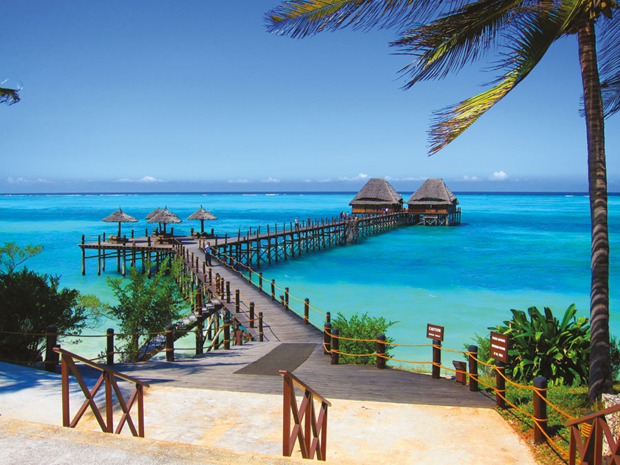

Le bord de mer
Partez à la recherche des baleines à bosses ! Zanzibar est une destination spéciale : on peut y voir des dauphins, des tortues et il est possible de faire de la plongée sous-marine et du snorkeling tout au long de l’année.